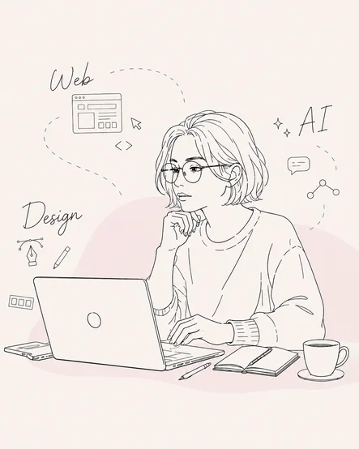
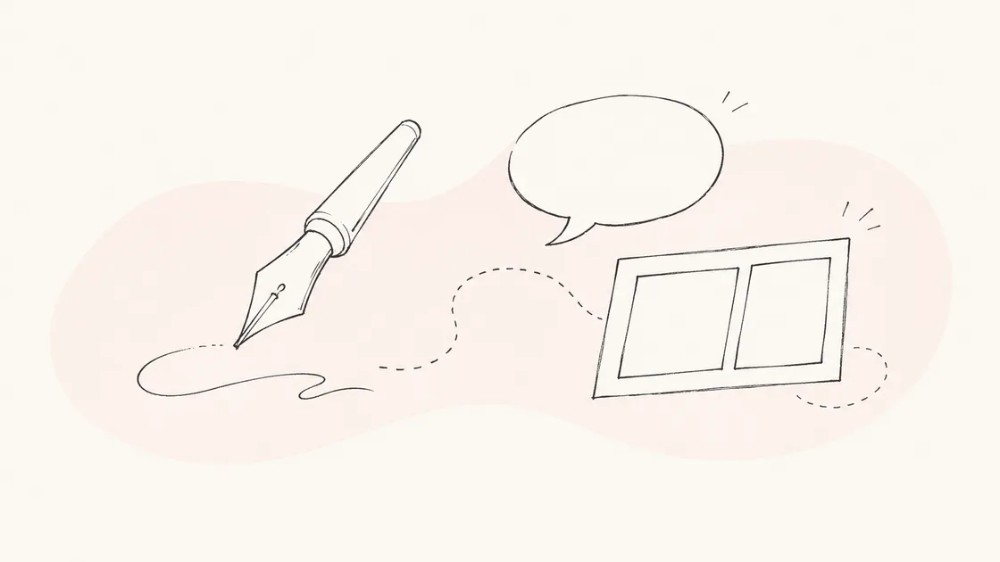
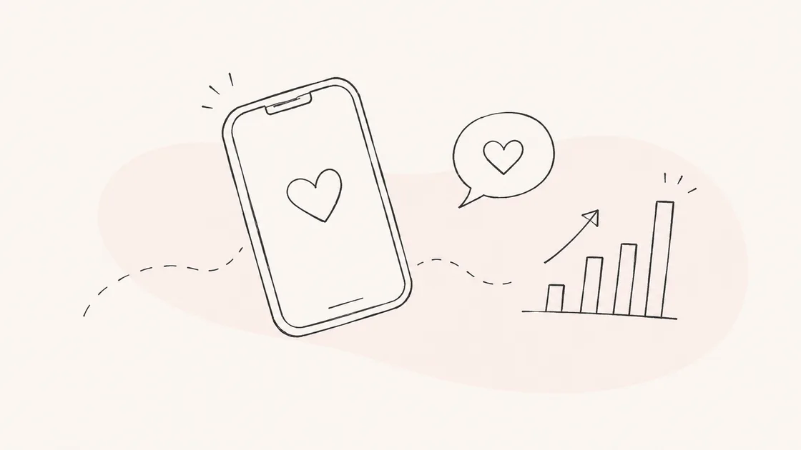
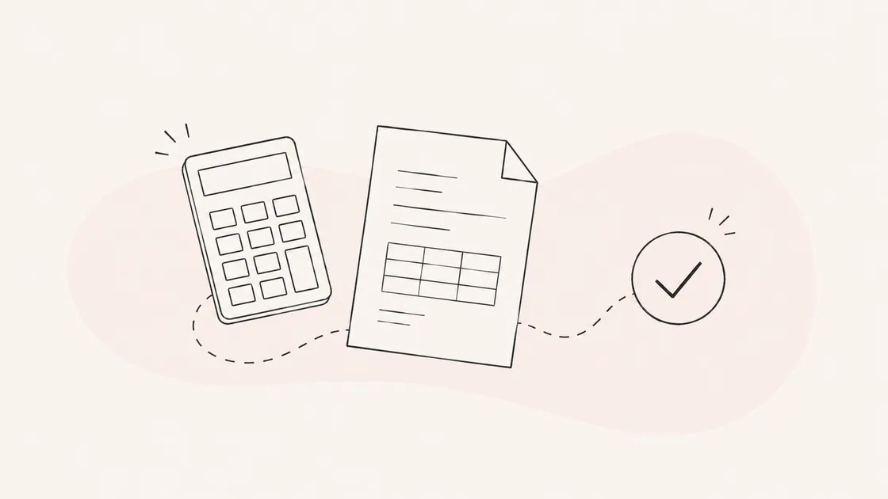
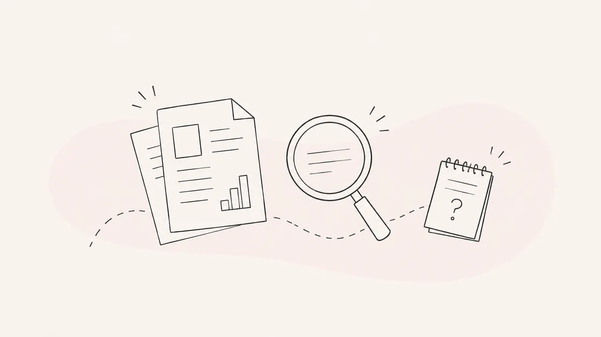
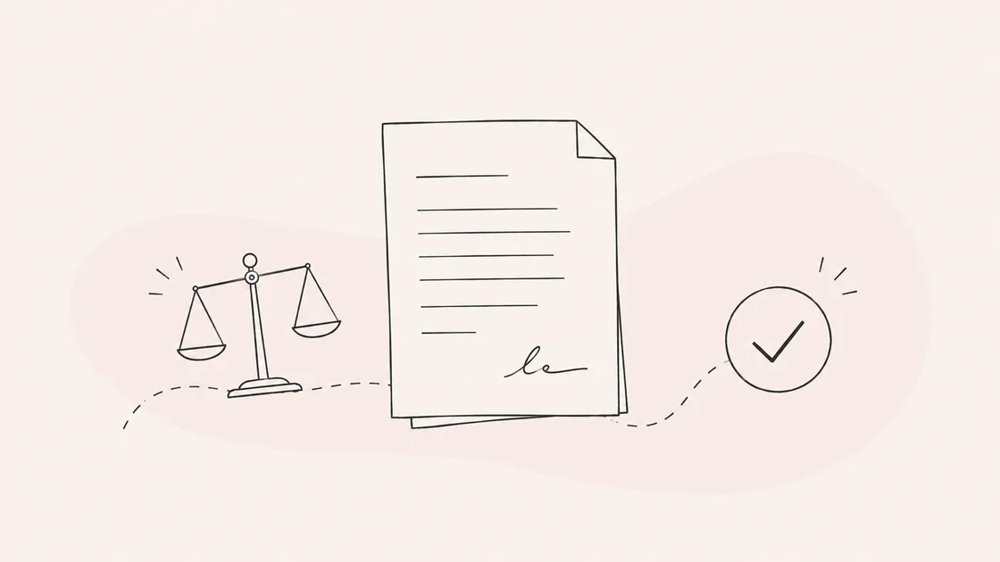

LET'S TALK.
まずは、お話から。
AIエージェントのご相談も、お仕事のお誘いも、ちょっとした挨拶も。まずは気軽にお話しできたらうれしいです。
話してみる
ご入力いただいた情報は、お問い合わせへの対応以外の目的では使用しません。
LINE公式アカウントで、気軽にどうぞ
困りごとから、エージェントが生まれる。
日々の困りごとをきっかけに、AIエージェントを自分の手で10体つくりました。今もブラッシュアップと新しい困りごとの解決に、日々向き合っています。

困りごとから生まれた、AIエージェントたち

言葉より伝わる、1コマの説明力。
企画・脚本・作画・仕上げまでを6体のAIが分担する漫画制作チーム。サービス紹介や社内説明を、読まれる漫画に変える。
manga-maker

投稿を、迷わず出せるチームに。
SNS運用の企画から投稿案作成まで伴走。複数クライアントの案件を並行管理しながら、日々の発信を止めない。
marketing-strategist
このサイトも、一緒に作った。
LPやサイトの構成・配色・コーディングを一緒に進めるWebデザインAI。今見ているこのページも、実際に一緒に作った1枚。
design-consultant
漏れる前提で、守り方を設計する。
APIキーの漏洩巡回や設定監査で、ひとり事業のセキュリティの穴を塞ぐ。「なんとなく大丈夫」を仕組みに変える。
security-guard
一件一件に、迷わず向き合えるように。
問い合わせ対応のテンプレートやエスカレーション基準を整備し、日々の対応品質を支える。
customer-support-advisor

数字の不安を、後回しにしない。
仕訳や経費整理をサポートする経理AI。個人事業主のリアルな運用に合わせてルールを組んでいる。
accounting-helper

調べる手間を、毎週手放す。
業界動向や競合の情報を定期的に自動調査。気づいたら情報が集まっている状態を作る。
research-assistant

契約書、後回しにしない仕組み。
業務委託契約書の作成やフリーランス新法対応をサポート。小さな見落としを防ぐ役目。
legal-advisor
発信を止めない、書き手の相棒。
自分自身の発信でも日常的に使っているコンテンツ制作AI。著作権や表現のルールを踏まえながら書き進める。
content-creator
ヒアリングから、チラシのコピーへ。
話を聞くところからコピー案の生成までをつなげた、自作の紙媒体制作AI。まだ育成中の最新作。
chirashi-ai
ほかにも、こんなエージェントを準備中です：AI社員秘書 ／ システムエンジニア ／ 新規事業 ／ スライド作成
まずは、お話から。
AIエージェントのご相談も、お仕事のお誘いも、ちょっとした挨拶も。まずは気軽にお話しできたらうれしいです。
ご入力いただいた情報は、お問い合わせへの対応以外の目的では使用しません。
LINE公式アカウントで、気軽にどうぞ